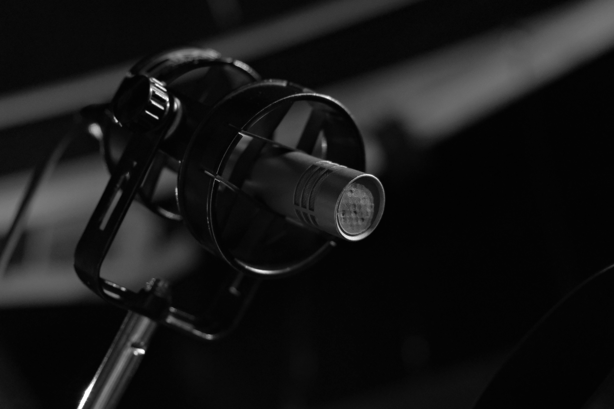

Blog about
art
music
design.
In the digital age, where cameras are in everyone's pocket, the resurgence of film photography might seem surprising. Yet, it has evolved from a medium of necessity to a cherished art form. What makes film photography so enduringly relevant in a world dominated by pixels?

- Art in the City: How Modern Sculptur...
- Is Film Photography Really Making a...
- Behind the Scenes of Galleries: How...
- Culture Online: Can Digital Replace t...
- Music as Therapy: How Sounds influ...
- Art in the City: How Modern Sculptur...
- Culture Online: Can Digital Replace t...